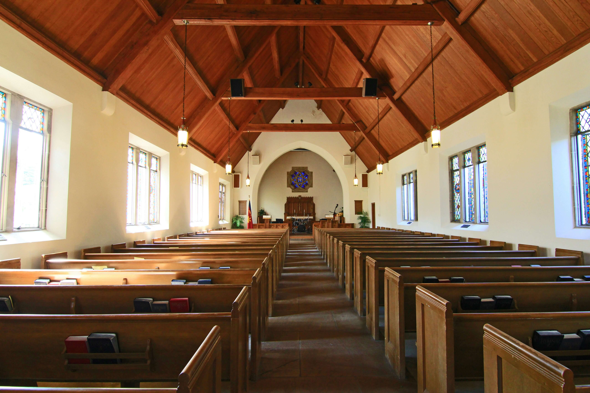
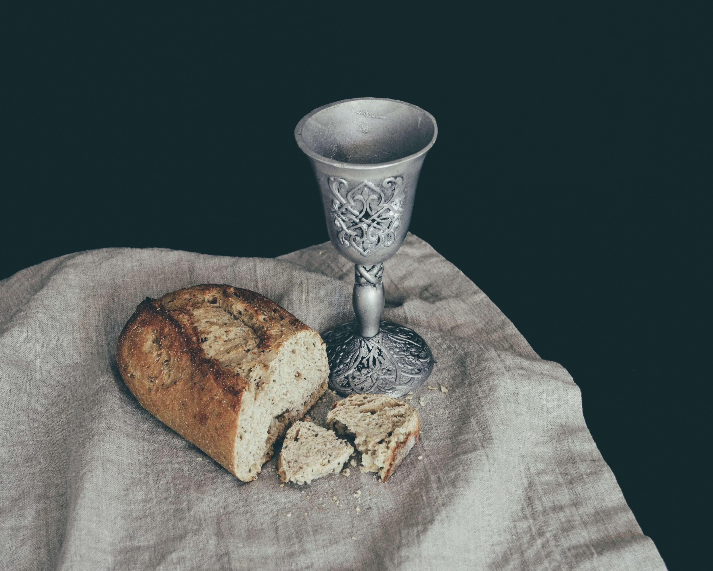

Events
We have multiple events every week so that we can stay connected during our time at LU. We all know that
its a bit of a challenge being an LCMS Lutheran at Liberty University, so these events are a valuable way to spend time reminding
ourselves of the truth of God's Word, and that we are saved by grace through faith in our Baptism.
Click the images below to learn more about our events!
Compline
Every Tuesday at 6pm, we meet in the Jerry Falwell Library courtyard by the waterfall for our compline service.
It takes less than half an hour, but serves as a great way to recenter on God's Word before heading back into
the business of the school week.
Bible Study
Every Thursday at 7:30pm, we meet in DeMoss 1366 in the School of Education for our evening bible study,
led by Pastor Yaeger of Our Savior Lutheran Church. We study God's Word from a confessional perspective.

